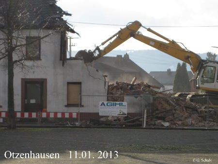
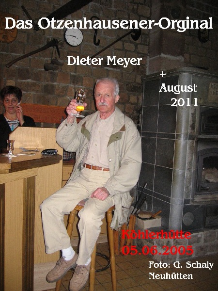
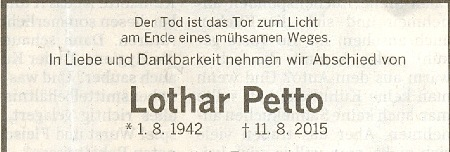
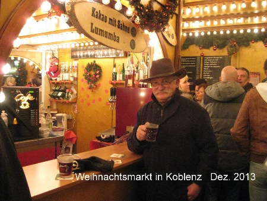
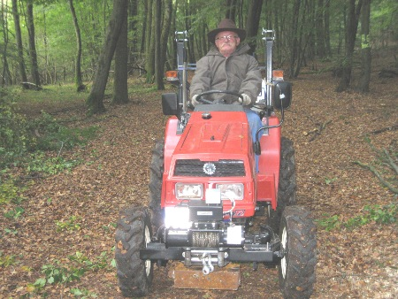
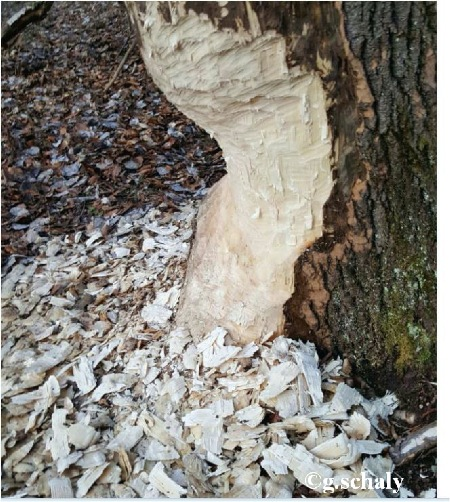
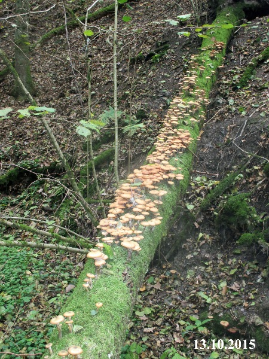
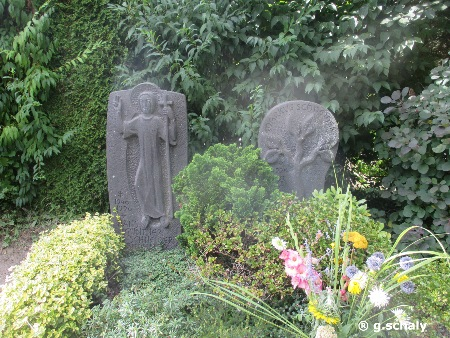
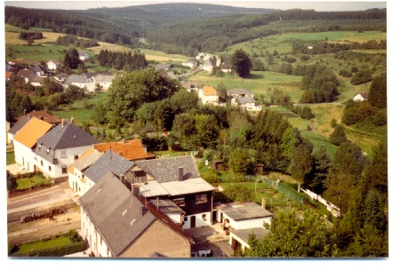

|

|

|

|

|

|

|

|

|

|

|
|
|
am Hermann Löns Grab bei Walsrode in der Lüneburger Heide
von
Mariahütte
Sie waren vor 50 Jahren sehr wohlhabend. Heute verfällt alles auf der Mariahütte, das Anwesen derer von Beulewitz und Hammerstein.
INSEKTENHOTEL
kleine Kneipe in Otzenhausen November 2012
am letzten Tag

zum Gedenken an Karl Heinz Mörsdorf ( Molle )
zum Gedenken an Herbert Bann
zum Gedenken an Oskar Becker

im März 2013 Neuhütten / Hunsrück
INERNATIONALER FRÜHSCHOPPEN bei Siska in Otzenhauusen,
hier
der Vorstand, Präsident, Huddel aus Schwarzenbach ......
auf der Traumschleife " Baybachklamm", sehr zu empfehlen..... Gaststätte Schmausemühle, gute Küche, freundliche Bedienung, sehr zu empfehlen....
Arno Rui
Schaly aus Campos Novos SC Brasilien zu Besuch in Neuhütten....hier in der Köhlerhütte... 2013
Am Tag der Jäger , Sammler und Fallensteller Neuhütten im Berg 1. 10 . 2013
leider sind einige von uns nicht mehr....ihnen zum Gedenken...
Lothar Mathieu +1.10.2021


Kirmesmontag in Muhl 7.5. 2018
7. 5..2018
Muhl...Albert Bier + Januar 2021
der erste Schnee 30. 10. 2018 Neuhütten / Hunsrück

Heimatfest in Züsch 2014
Winter 2014/15
Tus Koblenz Trainer Patrik Sander
Heimatmuseum Münstereifel
Limburg / Lahn
im
Hunsrück bei Lötzbeuern
v. links...Schuler Lothar, Huddel ( Ries Hans) Peter Kurt 30.6. 2015
aus vergangenen Tagen, Mariahütte Silvester 1967- 68
Grabkreuze von Bildhauer Johann Schön aus Otzenhausen. Grabmale standen auf dem Friedhof in Braunshausen bis 1966-67 heute im Besitz von Gernot Schaly in Neuhütten.....siehe auch Nonnweiler in alter Ansicht, Foto Nr. 71
habe damals die Steine mit dem Handwagen vom Friedhof an die Schleid geschafft..Vieles ist beim Umzug auf den Bauernschilz verloren gegangen. Diese Steine habe ich 1975 mit nach Neuhütten genommen...
hier alte Inschriften vom Friedhof in Braunshausen...Grabfeld wurde eingeebnet ca 1966-67.. Inschrift:
Johann Backes * 8.4.1854 in Braunshausen + 28.12.1933 verheiratet war er mit Wagner Maria
.. Das Paar hatte viele Kinder...Das war der Großvater von Backes Alfons,der Urgroßvater von Backes Heiderose...auch der Urgroßvater von Manfred Scholl und Helmut Kasper und vielen mehr..zwei Söhne sind im ersten Weltkrieg gefallen... So waren auf dem Friedhof in Braunshausen viele alte Grabsteine aus Sandstein, wohl von dem Bildhauer Schön von Otzenhausen.
hier die Inschrift vom Grabmal der Anna Backes geb. Morbach. Sie war die zweite Ehefrau von Backes Michael, einem Sohn von Johann B. und Wagner Maria
der Biber im Tal der Prims....

gesehen am 13. 10. 2015 am Münzbach bei Otzenhausen / Saar
Der Halimasch wurde noch in den 1955 Jahren von meiner Tante gesammelt und zubereitet. Sie waren damals nicht so häufig wie heute. Er wurde als Mahlzeit zubereitet weil halt gespart wurde. Häufig bekam man als Kinder zu hören...mir han kä Geld, ma ha nau gebaut...

Kernbeißer, nicht häufig hier bei uns....
Friedhof
Obermendig Ruhestätte v. Günther u. Marcus Schneider.
Günther Schneider war mein Meister in der Lehrzeit 1965-68
in Maria Laach

Züsch Sommer 1987...der Kirchturm der kath. Pfarrkirche wird neu gedeckt.. Friedrich Gräber + aus Neuhütten klettert auf den Turm und macht diese Fotos....
alte Ansichtskarte von Züsch

Ringelnatter in unserem Teich
neu gestaltet 2017...hoffe das der Frost diesem System der Gabionenmauer nichts anhaben kann....
aus vergangenen Tagen
Dollbergstr, 37
Friedrich Klein (
Schreiner Fritz) kaufte das Anwesen um 1918, er stammte aus Züsch...sein Vater Friedrich Klein, Schreiner wurde schon 1846 in Züsch als Schreiner erwähnt..er betrieb hier eine Schreinerei und auch Landwirtschaft. rechts neben der Tür (Fenster) betrieb Johann Kretz eine Schuhmacherwerkstatt.
Schreiner Fritz und Klein,s Modder
Klein,s Josef in Sandweiler Lux. Soldatenfriedhof..Grab von Klein,s Jakob..
ich war damals mit.
Anfang der 60 Jahre wurden die Fronten mit Eternitplatten zugeschlagen, es kamen Rollläden an die Fenster und alles alte kam auf die Kipp. Es wurden Möbel aus Pressplatten und Geschirr aus Plastik angeschafft...
hier der alte Putz auf den Bruchsteinen
die Nachbarn Familie Kolling um 1942- 45... heute Martina Hornberger...
Ida und Ernesto Hoffmann aus Blumenau SC Brasilien zu Besuch. Er war das erste mal 1987 in Neuhütten und war viele Jahre unser Gast.
So wurde früher gebaut...Gerüst aus Eichenbalken, die Zwischenräume wurden aufgefüllt mit Lehm, Stroh, Äste und und...die Außenmauern waren aus Bruchsteinen...die Gewänder ( Türen und Fenster, Scheunen und Stalltüren waren aus gelbem Sandstein..das Haus war nur teilweise unterkellert..ein kleiner Kellerraum.. Die Zimmer waren klein und man konnte mit erhobenem Arm an die Decke fahren wenn man nicht gerade klein war.
Bluthänfling - Pärchen brütet in unserem Buxbaum Neuhütten / Hunsrück Mai 2020...
August 2021 in Neuhütten ©g.schaly
|


 Otzenhausen Kleine Kneipe, um 2011. Das waren noch gute Zeiten
Otzenhausen Kleine Kneipe, um 2011. Das waren noch gute Zeiten